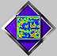

Using PatchDemo
This document describes how to use the PatchDemo program to listen to DSP instruments.
Click on any of the topics below to select it:
PatchDemo features and background
Working with PatchDemo
Adjusting instrument knobs